Tong hop tin tuc - 2026-04-04
TIN MỚI Ảnh minh họa Đồng USD tăng giá mạnh nhất 8 tháng, NHNN bán ngoại tệ can thiệp Trong tháng 3, chỉ số DXY đã có tháng tăng mạnh nhất kể từ tháng 7/2025 khi bật lên 100,51 điểm vào cuối tháng 3,
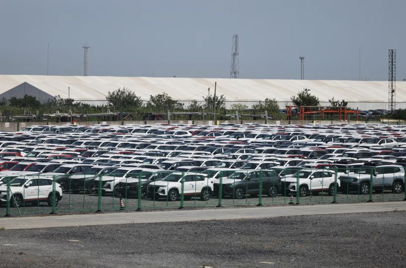
Ngoài việc muốn cấm lắp ráp xe Trung Quốc tại Mỹ, các nghị sĩ còn đề xuất ôtô của các hãng Trung Quốc sản xuất tại Mexico hay Canada không được nhập khẩu vào nền kinh tế lớn nhất thế giới. Thượng nghị
TIN MỚI Malaysia đang đối mặt với áp lực tài khóa ngày càng lớn khi chi phí trợ giá nhiên liệu tăng mạnh trong bối cảnh giá dầu toàn cầu leo thang. Theo báo cáo từ Channel News Asia, Chính phủ Malaysi
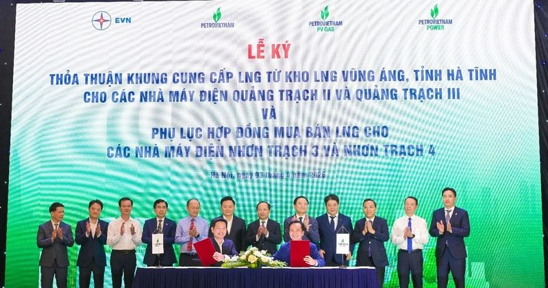
TIN MỚI Ngày 3/4 tại Hà Nội, Tổng công ty Khí Việt Nam (PV GAS) cùng Tập đoàn Điện lực Việt Nam (EVN) và Tổng công ty Điện lực Dầu khí Việt Nam (PV Power) đã ký kết các thỏa thuận cung cấp khí thiên n
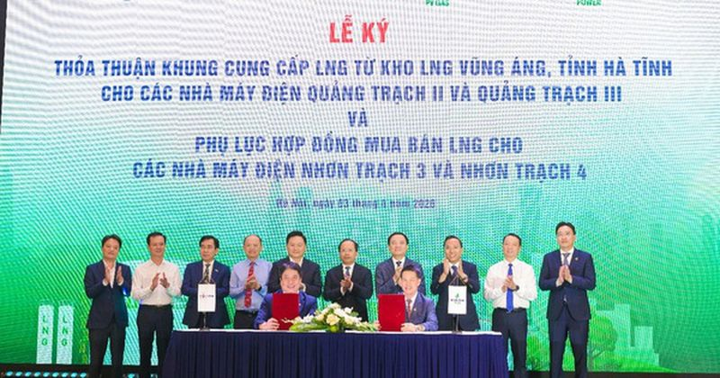
TIN MỚI Ngày 4-4, Tổng Công ty Khí Việt Nam (PV GAS) cho biết đã cùng Tập đoàn Điện lực Việt Nam (EVN) và Tổng Công ty Điện lực Dầu khí Việt Nam (PV Power) ký kết các thỏa thuận quan trọng về cung cấp
TIN MỚI Từng là thứ bỏ đi đen kịt và gây tắc nghẽn cống rãnh, dầu ăn đã qua sử dụng (UCO) đang chứng kiến một cuộc "đổi đời" ngoạn mục. Trong bối cảnh ngành hàng không toàn cầu bị siết chặt bởi các qu
TIN MỚI Ngày 3-4, tin từ Tập đoàn Xăng dầu Việt Nam (Petrolimex) cho biết Petrolimex và Công ty GGenTec ký kết Biên bản ghi nhớ hợp tác nghiên cứu dự án nhà máy sản xuất dầu tái sinh từ dầu thải, nhựa
TIN MỚI Theo báo cáo kinh tế - xã hội quý I/2026 do Cục Thống kê (thuộc Bộ Tài chính) công bố ngày 4/4, chỉ số giá tiêu dùng (CPI) trong tháng 3/2026 tăng 1,23% so với tháng liền trước và tăng 4,65% s
TIN MỚI Bộ Xây dựng vừa đề nghị Ngân hàng Nhà nước Việt Nam nghiên cứu để tổng hợp 2 dự án đường sắt Bến Thành - Cần Giờ và đường sắt tốc độ cao Hà Nội - Quảng Ninh vào Danh mục các dự án trong Chương
TIN MỚI Theo Reuters , khi Tổng thống Donald Trump quyết định tấn công Iran, có lẽ ông không hề nghĩ rằng động thái đó có thể mang lại cho Tehran một nguồn thu khổng lồ, lên tới 500 tỷ USD trong vài n
Trong giai đoạn đầu sự nghiệp tại NBA, Giannis nổi tiếng với tính thận trọng tài chính cực độ. Ám ảnh bởi nguy cơ mất đi khối tài sản mới tích lũy, chàng trai trẻ người Hy Lạp khi ấy mở tài khoản tại
TIN MỚI Trong cơn lốc "Xanh hóa" đang quét qua các sàn thương mại điện tử (TMĐT) toàn cầu như Amazon, Walmart hay Alibaba, những chiếc xe điện (EV) bóng bẩy không chỉ là biểu tượng của bảo vệ môi trườ
TIN MỚI Thông tin về vụ án liên quan hệ sinh thái Thẩm mỹ viện Mailisa, Thượng tá Hồ Văn Hùng, Phó Cục trưởng Cục Cảnh sát điều tra tội phạm về tham nhũng, kinh tế, buôn lậu Bộ Công an cho biết, sau k
TIN MỚI Một bước tiến đột phá trong lĩnh vực công nghệ y sinh đang thu hút sự chú ý mạnh mẽ của cộng đồng quốc tế khi một mẫu tay giả sinh học có khả năng “đọc” ý định của não người được giới thiệu rộ
Báo cáo của Thống kê TP HCM cho biết tổng sản phẩm trên địa bàn (GRDP) quý I ước tăng 8,27% so với cùng kỳ, nếu không tính dầu khí thì tăng 8,58%. Đây là mức tăng trưởng quý I cao nhất hơn 5 năm gần đ
Tổng thống Mỹ Donald Trump ngày 2/4 thông báo quân đội Mỹ đã phá hủy cầu B1, một trong những cây cầu lớn nhất Trung Đông tại thành phố Karaj, cách thủ đô Tehran của Iran khoảng 35 km về phía tây. Vụ t
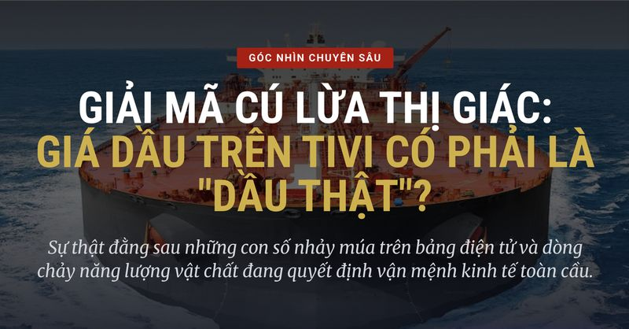
Nhà Trắng ngày 3/4 công bố yêu cầu trên trong bản đề xuất ngân sách 92 trang trình lên quốc hội, kèm theo bản tóm tắt nêu rõ những ưu tiên của chính quyền Mỹ đối với các cơ quan liên bang. Trong đề xu
Quyết định nằm trong kế hoạch tái cơ cấu tổng số 460 chương trình của trường, theo thư gửi giảng viên và sinh viên ngày 1/4. Hiệu phó Lois Agnew đánh giá bước đi này nhằm xây dựng một mô hình đại học
"Tôi biết Pam nhiều năm rồi. Bà ấy là người thông minh và cứng rắn, người chiến đấu vì Nước Mỹ trên hết", ông Donald Trump viết trên mạng xã hội X ngày 21/11/2024, sau khi đắc cử Tổng thống Mỹ và đề c
TIN MỚI Chủ tịch Quốc hội Iran Mohammad-Baqer Qalibaf. Trong một thông điệp, quan chức Iran đặt câu hỏi về những quốc gia và doanh nghiệp có lưu lượng vận tải lớn nhất qua tuyến đường này. Trong bài đ
TIN MỚI Phòng Xử lý nợ - Khối Quản trị rủi ro, Ngân hàng Sài Gòn Thương Tín (Sacombank, mã chứng khoán: STB) vừa thông báo thu giữ tài sản bảo đảm khoản nợ xấu của Công ty CP Hàng không Tre Việt (Bamb
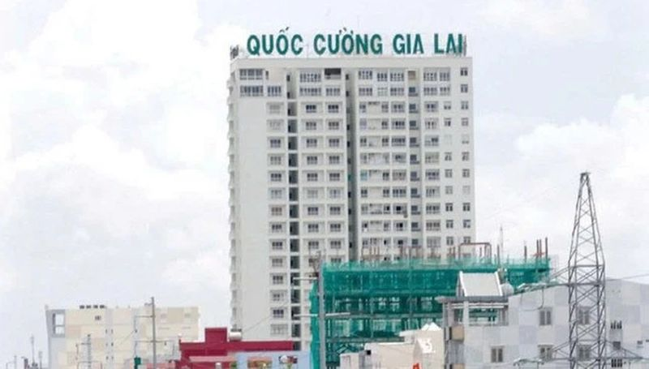
TIN MỚI Trả được 1.100 tỷ Công ty CP Quốc Cường Gia Lai (mã chứng khoán: QCG) vừa công bố báo cáo tài chính hợp nhất năm 2025 đã được kiểm toán. Trong đó, đơn vị kiểm toán là Công ty TNHH Kiểm toán và
TIN MỚI Theo thông tin do Cơ quan Quốc gia về Dầu mỏ, Khí đốt và Nhiên liệu sinh học Angola (ANPG) công bố hôm 1/4, Tập đoàn Xuân Thiện (XTG) đã trúng thầu lô dầu khí KON 9, một trong những khu vực gi
TIN MỚI Cuộc truy vết xuyên đêm Vụ việc xảy ra tại Vũ Hán (TQ) khi cơ quan chức năng nhận được cảnh báo liên quan đến một kiện hàng chuyển phát nhanh có dấu hiệu bất thường. Theo dữ liệu ban đầu, đây
TIN MỚI Chiều 3/4, Liên đoàn Thương mại và Công nghiệp Việt Nam (VCCI), Cục Thuế tổ chức hội thảo nhằm hỗ trợ các hộ kinh doanh kê khai thuế quý I. Đây là kỳ kê khai đầu tiên sau xóa thuế khoán, nhiều
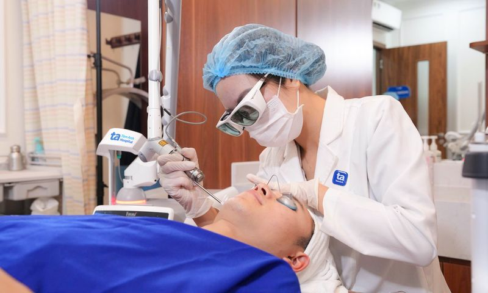
BS.CKI Dương Quốc Trung, khoa Thẩm mỹ, Bệnh viện Đa khoa Tâm Anh Hà Nội, cho biết nếu cài đặt mức năng lượng của thiết bị không phù hợp với loại da, đặc biệt ở những người có làn da sẫm màu hoặc nhạy
Bộ Tài chính đã ban hành Thông tư hướng dẫn thuế với giao dịch tài sản mã hóa . Trong đó, nhà đầu tư là cá nhân có hoạt động chuyển nhượng tài sản mã hóa qua tổ chức cung cấp dịch vụ thuộc đối tượng n
TIN MỚI Theo Al Jazeera , chiến dịch giải cứu phi công Mỹ đang diễn ra trong điều kiện cực kỳ rủi ro, sau khi tiêm kích F-15E bị hệ thống phòng không Iran bắn hạ. Theo các chuyên gia quân sự, đây có t
Ở bán kết nội dung đôi nữ, đôi vợt số một thế giới Anna Leigh Waters và Anna Bright tạo ra thế trận một chiều với đôi Tina Pisnik và Jessie Irvine. Hai tay vợt cùng tên Anna vượt trội những đối thủ họ
TIN MỚI Đàm phán Mỹ - Iran bế tắc Nỗ lực hòa giải do các quốc gia trong khu vực, trong đó có Pakistan, dẫn dắt nhằm đạt được một lệnh ngừng bắn giữa Mỹ và Iran đang rơi vào bế tắc. Diễn biến này xảy r
TIN MỚI Phó Thống đốc Ngân hàng Nhà nước Phạm Thanh Hà trả lời câu hỏi của báo chí về định hướng điều hành chính sách lãi suất - Ảnh: VGP/Nhật Bắc Trả lời tại họp báo Chính phủ thường kỳ tháng 3/2026
Hãng thông tấn Tasnim hôm nay dẫn lời chuẩn tướng Alireza Elhami, chỉ huy Bộ tư lệnh Liên hợp Phòng không Quốc gia Iran, cho biết binh sĩ nước này đang phục kích chiến đấu cơ và máy bay không người lá
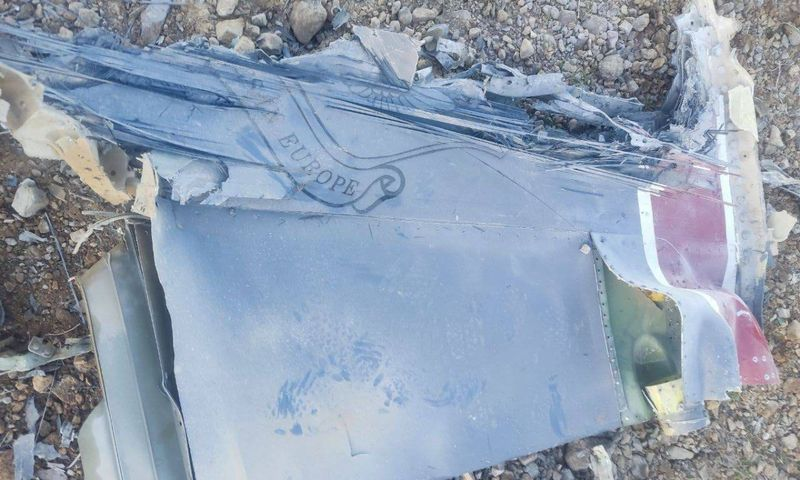
Vệ binh Cách mạng Hồi giáo Iran (IRGC) hôm 3/4 thông báo bắn rơi một tiêm kích tàng hình F-35 ở miền trung nước này bằng "hệ thống phòng không tiên tiến". Tuy nhiên, dựa vào hình ảnh các mảnh vỡ do Te
TIN MỚI Naphtha không phải là nguyên liệu đầu vào được nhắc đến nhiều trong câu chuyện bán dẫn. Nhưng đây chính là nguyên liệu hóa dầu mà từ đó các hóa chất chuyên dụng phục vụ sản xuất chip được tạo
TIN MỚI Hãng thông tấn xã TASS của Nga đưa tin ngày 3/4, Nga vừa phát triển một phương pháp mới giúp giảm lượng khí thải độc hại từ hoạt động của tuabin khí lên đến 30%. Các chuyên gia từ Đại học Bách
Sáng 4/4, Thủ tướng Phạm Minh Chính nhắc lại cách đây 5 năm, ngày 5/4/2021, ông được bầu giữ chức Thủ tướng, một ngày sau Chính phủ được kiện toàn. Hôm nay là phiên họp cuối cùng của Chính phủ khóa 15
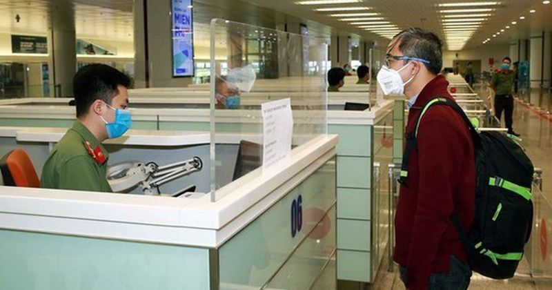
TIN MỚI Cổng thông tin điện tử của Cục Thuế (Bộ Tài chính) vừa đăng tải thông tin về 18 giám đốc, người đại diện pháp luật của các doanh nghiệp thuộc diện bị thông báo tạm dừng xuất cảnh. Thông báo kh
Ngân hàng Sài Gòn Thương Tín (Sacombank) cho biết sẽ thu giữ tài sản đảm bảo của khoản nợ xấu tại Công ty Hàng không Tre Việt (Bamboo Airways) sau khi bên vay và bên bảo đảm không thực hiện nghĩa vụ t
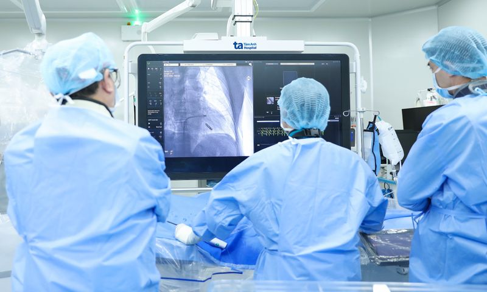
Máy tạo nhịp không dây là thiết bị được cấy ghép vào bên trong cơ thể người bệnh để điều trị hội chứng nhịp nhanh nhịp chậm, blốc nhĩ thất cao độ, rung nhĩ đáp ứng thất chậm... GS.TS.BS Võ Thành Nhân,
Tuần trước, Tổng thống Mỹ Donald Trump ký sắc lệnh yêu cầu Bộ An ninh Nội địa (DHS) trả đủ lương cho nhân viên Cơ quan An ninh Vận tải Mỹ (TSA), những người đã phải làm việc không lương khi chính phủ
Lực lượng Mỹ đang ráo riết triển khai chiến dịch tìm kiếm và cứu nạn để giải cứu một phi công F-15 mất tích sau khi máy bay bị bắn hạ tại Iran hôm 3/4. Có hai phi công trên máy bay gặp nạn và đã phóng
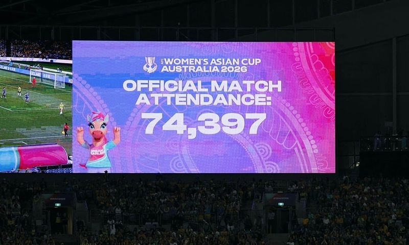
Trong tuyên bố chung công bố ngày 3/4 thông qua Hiệp hội cầu thủ chuyên nghiệp thế giới (FIFPro), hai đội nhận xét Asian Cup nữ vừa kết thúc "có tiền thưởng thấp nhất trong các giải châu lục", bất chấ
TIN MỚI VIETQRGlobal ra đời nhằm phục vụ nhu cầu thanh toán của du khách, người dân khi di chuyển, tiêu dùng và giao dịch giữa các quốc gia khác nhau. Trong dự án kết nối thanh toán bán lẻ song biên q
Tại kỳ họp thứ nhất Quốc hội khóa 16 (nhiệm kỳ 2026-2031) sắp tới, Chính phủ trình nghị quyết đưa Đồng Nai trở thành thành phố trực thuộc Trung ương sau khi Trung ương đồng ý chủ trương . Tỉnh cũng đã
Ông Adam Smith, thành viên cấp cao của đảng Dân chủ trong Ủy ban Quân vụ Hạ viện, ngày 3/4 bày tỏ không đồng tình với phát biểu của Tổng thống Donald Trump rằng việc một tiêm kích Mỹ bị bắn hạ sẽ khôn
Truyền thông Mỹ ngày 3/4 đưa tin một tiêm kích F-15E của nước này bị bắn rơi ở tây nam Iran và hai phi công trong buồng lái đã phải phóng dù thoát hiểm. Đây được coi là lần đầu tiên một chiến đấu cơ M
"Sau khi 'đánh bại Iran 37 lần liên tiếp', cuộc chiến vĩ đại nhưng chẳng có kế hoạch gì mà họ phát động giờ chỉ còn là 'Này! Có ai thấy phi công của chúng tôi không? Làm ơn'", Chủ tịch Quốc hội Iran M
Hãng thông tấn Mehr và Tasnim của Iran ngày 3/4 đưa tin một trực thăng Black Hawk của Mỹ "đã bị tấn công khi đang tham gia tìm kiếm phi công", đồng thời công bố hình ảnh cho thấy một phi cơ bốc khói t
TIN MỚI Theo ghi nhận của phóng viên Báo Người Lao Động ngày 2-4, một số ngân hàng (NH) đã ngừng chào mời người dân gửi tiết kiệm với mức lãi suất cao hơn niêm yết, song mặt bằng lãi suất vẫn còn duy
"Văn phòng thông tấn quân sự cho biết một cường kích A-10 Mỹ đã bị hệ thống phòng không Iran bắn rơi ở vùng biển phía nam và rơi xuống khu vực thuộc vịnh Ba Tư", hãng thông tấn Tasnim của Iran đưa tin
DVP: Giá hiện tại Thay đổi Xem hồ sơ doanh nghiệp TIN MỚI CTCP Đầu tư và Phát triển Cảng Đình Vũ (mã: DVP) đã công bố tài liệu họp Đại hội cổ đông thường niên năm 2026, dự kiến tổ chức vào ngày 22/4/2
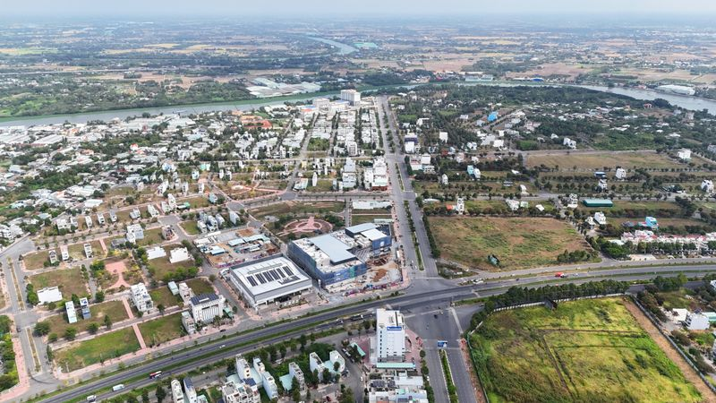
Chiều 3/4, Hội đồng thẩm định UBND tỉnh thông qua báo cáo nghiên cứu tiền khả thi dự án trục kết nối Long An - Tân Ninh. Công trình sử dụng vốn đầu tư công, trong đó chi phí xây dựng hơn 15.600 tỷ đồn
Alua Nurman chụp ảnh cùng Carlsen trước ván đấu vòng hai Grenke Freestyle Chess ở thành phố Karlsruhe, Đức ngày 3/4/2026. Ảnh: chụp màn hình Tại vòng hai giải cờ vua 960 Grenke Open chiều 3/4, Nurman
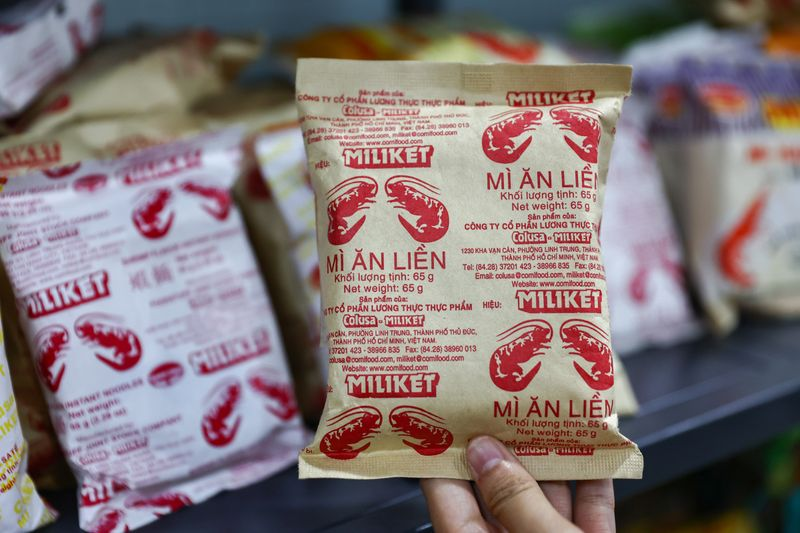
Theo báo cáo tài chính kiểm toán mới công bố, Công ty Lương thực thực phẩm Colusa - Miliket (gọi tắt là Comifood) ghi nhận doanh thu tăng 8% so với cùng kỳ, lên hơn 800 tỷ đồng, cao nhất từ trước đến
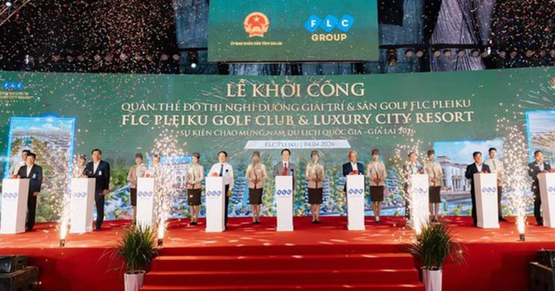
TIN MỚI Ngày 4-4, tại khu phức hợp Đak Đoa, tỉnh Gia Lai, Tập đoàn FLC tổ chức lễ khởi công Quần thể đô thị nghỉ dưỡng, giải trí và sân golf FLC Pleiku – dự án đô thị nghỉ dưỡng gắn với sân golf tiêu
TIN MỚI Trong mức tăng chung của nền kinh tế, khu vực nông, lâm nghiệp và thủy sản tăng 3,58%, đóng góp 5,60% vào mức tăng tổng giá trị tăng thêm của toàn nền kinh tế; khu vực công nghiệp và xây dựng
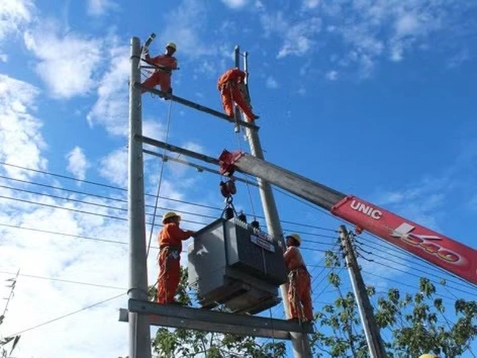
TIN MỚI Chiều 4/3, UBND Cần Thơ làm việc với Tập đoàn Điện lực Việt Nam (EVN) về tình hình cung ứng điện trên địa bàn. Ông Lê Hoàng Thắng - Giám đốc Công ty Điện lực Cần Thơ cho biết, đến tháng 3/2026
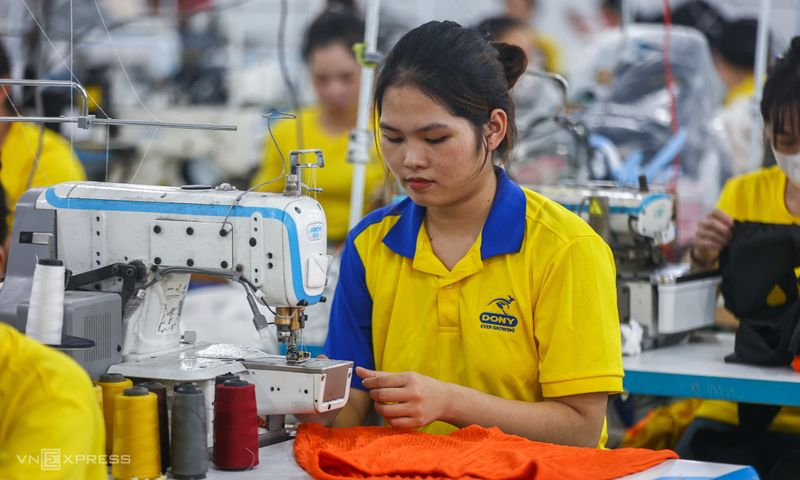
Ông Trần Ngọc Liêm, Giám đốc Liên đoàn Thương mại và Công nghiệp Việt Nam chi nhánh khu vực TP HCM, cho rằng biến động địa chính trị, đặc biệt là xung đột tại Trung Đông, đã đẩy giá nhiên liệu tăng mạ
TIN MỚI Theo báo cáo kinh tế - xã hội quý I/2026 do Cục Thống kê (thuộc Bộ Tài chính) công bố ngày 4/4, trong tháng Ba, cả nước có gần 22 nghìn doanh nghiệp thành lập mới, tăng 94,1% so với tháng trướ
TIN MỚI Đại hội dự kiến tổ chức ngày 25/4/2026, trong bối cảnh doanh nghiệp đã ghi nhận kết quả kinh doanh vượt kế hoạch năm 2025 và đang chuẩn bị bước vào giai đoạn tăng tốc. Cụ thể, trong năm 202
TIN MỚI Khách hàng không chỉ tìm kiếm sản phẩm đáp ứng công năng hay đảm bảo an toàn cho sức khỏe, mà còn ưu tiên những giá trị khác: tính thẩm mỹ, chiều sâu văn hóa và niềm tự hào khi sử dụng hàng Vi
Năm 2019, chiếc đồng hồ Patek Philippe Grandmaster Chime gây chấn động khi được bán đấu giá với mức gần 35,5 triệu USD. Năm 2022, một chiếc túi Hermes Himalaya Niloticus Crocodile Diamond Birkin 30 cũ
TIN MỚI Bị can Vương Lê Vĩnh Nhân. Tại cuộc họp báo do Bộ Công an tổ chức diễn ra chiều qua (3/4), Đại tá Phạm Mạnh Hùng, Phó Cục trưởng Cục An ninh kinh tế đã thông tin liên quan đến vụ án sàn giao d
TIN MỚI Khu vực eo biển Hormuz. (Ảnh: Reuters) Nhận định này cho thấy Tehran có thể tiếp tục siết chặt eo biển nhằm giữ giá năng lượng ở mức cao, qua đó gây sức ép buộc Tổng thống Mỹ Donald Trump phải
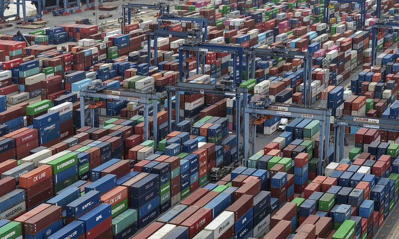
Sáng nay, Cục Thống kê (GSO) công bố tình hình kinh tế ba tháng đầu năm. Kinh tế Việt Nam trong quý I khởi sắc, tăng 7,83% so với cùng kỳ năm trước. Khu vực công nghiệp và xây dựng - dịch vụ vẫn chiếm
TIN MỚI Thái Nguyên dẫn đầu cả nước về thu hút vốn FDI đầu năm 2026 Làn sóng dịch chuyển sản xuất toàn cầu đang đưa Thái Nguyên trở thành một trong những khẳng định vị thế là một trong những "thủ phủ
Wall Street Journal hôm nay dẫn lời một quan chức an ninh Israel giấu tên cho biết nỗ lực tìm kiếm dường như đang tập trung ở tỉnh Khuzestan nằm dọc theo vịnh Ba Tư và giáp với Iraq, thêm rằng Tel Avi
TIN MỚI Theo thông tin do Cơ quan Quốc gia về Dầu mỏ, Khí đốt và Nhiên liệu sinh học Angola (ANPG) công bố hôm 1/4, Tập đoàn Xuân Thiện (XTG) đã trúng thầu lô dầu khí KON 9, một trong những khu vực gi
TIN MỚI Sản phẩm này là VEGAFLY-1, thuộc dòng vệ tinh cỡ nhỏ (microsat). Đây là sản phẩm do đội ngũ kỹ sư của Vegacosmos phát triển trong 2 năm. Vào đúng 18h02’ ngày 30/03/2026, vệ tinh cỡ nhỏ VEGAFLY
Nguyễn Anh Kiệt gây chú ý khi tới cổ vũ bạn gái tại chung kết Miss World Vietnam 2025, tối 29/3 ở TP HCM. Anh diện suit còn Ý Nhi mặc đầm dạ hội xuyên thấu của nhà thiết kế Thượng Gia Kỳ. Nguyễn Anh K
TIN MỚI Theo thông báo, Vietcombank áp dụng hai hình thức tuyển dụng. Đối với ứng viên thông thường, quy trình đánh giá bao gồm vòng thi kiến thức chuyên môn nghiệp vụ và vòng phỏng vấn. Đối với ứng v
Hồ Tâm Dao, 23 tuổi, mắc một căn bệnh mạch máu hiếm gặp có tên là viêm mạch liên quan đến ANCA. Cô đang ngồi tàu điện ngầm ở Trùng Khánh ngày 23/3 để tới bệnh viện tiêm thuốc thì ho ra máu do xuất huy
Chiều 4/4, tại họp báo Chính phủ thường kỳ, ông Hoàng Đức Minh, Vụ trưởng Vụ Học sinh, sinh viên (Bộ Giáo dục và Đào tạo), cho biết yêu cầu nêu trên được đưa ra sau khi Công an Hà Nội phát hiện đường
Đây là một trong những hạng mục chính thuộc dự án nút giao An Phú (TP Thủ Đức cũ) - khu vực được xem có tình hình giao thông phức tạp nhất TP HCM. Ban Quản lý dự án đầu tư xây dựng các công trình giao
Người phát ngôn Bộ Ngoại giao Iran Esmaeil Baghaei ngày 3/4 thông báo lực lượng phòng không nước này đã bắn hạ một máy bay không người lái (UAV) trên bầu trời thành phố Shiraz ở miền nam, đồng thời cô
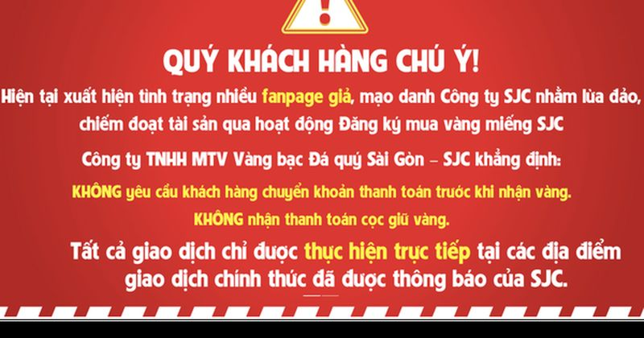
TIN MỚI Công ty Vàng bạc - Đá quý Sài Gòn (SJC) vừa phát đi cảnh báo về việc xuất hiện nhiều fanpage giả mạo thương hiệu nhằm lừa đảo, chiếm đoạt tài sản của khách hàng. Theo SJC, các đối tượng thường
TIN MỚI Liên minh châu Âu sẽ phân bổ thêm 1,4 tỷ euro lấy từ tài sản bị đóng băng của Nga để hỗ trợ Ukraine, Ủy ban châu Âu đưa ra tuyên bố này trong một cuộc họp báo. "Ngày hôm trước, EU đã phân bổ t
TIN MỚI Đề nghị ngừng bắn được đưa ra hôm 1/4 thông qua một nước thứ ba, theo nguồn tin của hãng thông tấn Fars . Nhưng thay vì trả lời bằng văn bản, Iran đã đáp trả bằng các cuộc tấn công liên tục. N
TIN MỚI Thủ tướng Chính phủ Phạm Minh Chính vừa ký Chỉ thị số 12/CT-TTg ngày 3/4/2026 về việc tăng cường, nâng cao hiệu lực, hiệu quả, trách nhiệm trong công tác đấu thầu. Chỉ thị nêu: Trong thời gian
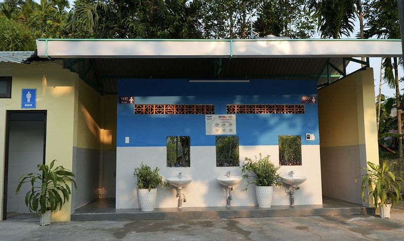
Ngày 2/4, các công trình vệ sinh học đường đã được bàn giao cho trường Tiểu học Sơn Hạ số 1, Tiểu học Sơn Thành và Tiểu học thị trấn Di Lăng số 2. Mỗi công trình có quy mô từ 4 đến 10 khoang, thiết kế
Cuối tháng 3, Guardian đưa tin tờ New York Times ra quyết định sau vi phạm của nhà văn, nhà báo Alex Preston. Một độc giả đã phát hiện những điểm tương đồng giữa hai bài đánh giá cuốn Watching Over He
TIN MỚI Hội đồng Bảo an Liên hợp quốc (LHQ) trong ngày 4-4 dự kiến bỏ phiếu về nghị quyết nhằm bảo vệ hoạt động vận tải thương mại trong và xung quanh eo biển Hormuz. Theo hãng tin AP, Bahrain đã điều
Lầu Năm Góc tuần này cho biết đã quân đội Mỹ đã tiến hành hơn 11.000 cuộc tấn công vào các mục tiêu tại Iran trong vòng 5 tuần qua, nhấn mạnh đã đạt tiến triển đáng kể trong việc làm suy yếu năng lực
Fars News , hãng tin thân cận với Vệ binh Cách mạng Hồi giáo Iran, ngày 3/4 dẫn nguồn quan chức thạo tin nói rằng phía Mỹ đã chuyển tới Iran đề xuất ngừng bắn 48 giờ, thông qua một "quốc gia thân thiệ
Ván đấu tâm điểm giữa Nakamura và Sindarov diễn ra theo kịch bản thú vị, với bước ngoặt xuất hiện ngay từ nước 13. Sau khi bất ngờ lựa chọn Gambit Marshall và chấp nhận thí hai tốt từ sớm, kỳ thủ Mỹ đ
Các sản phẩm được trưng bày trong khuôn khổ Hội nghị Da liễu Thẩm mỹ miền Nam 2026 ngày 29/3 ở TP HCM. Farmona là hãng dược mỹ phẩm của Ba Lan, thành lập năm 1997, phát triển nhiều dòng chăm sóc tóc,
Chuyên viên Nguyễn Thị Thu Huyền, khoa Dinh dưỡng, Bệnh viện Đa khoa Tâm Anh Hà Nội, cho biết nhiều người duy trì những thói quen ăn sáng tưởng chừng vô hại nhưng lại âm thầm làm tăng mỡ máu. Ăn sáng
Khoảnh khắc trực thăng Mỹ bị nhắm bắn khi bay thấp ở Iran Như Tâm (Video: New York Times, Clash Report )
TIN MỚI Dự án đường nối Đại lộ Thăng Long với cao tốc Hà Nội – Hòa Bình có tổng vốn đầu tư khoảng 5.200 tỷ đồng, chiều dài 6,7 km, được xác định là một trong những công trình hạ tầng trọng điểm phía T
Dừa là thực phẩm rất đa dạng, hầu như mọi phần của quả đều có thể sử dụng dưới nhiều dạng khác nhau. Cùi dừa tươi dùng ăn trực tiếp hoặc chế biến món ăn, trong khi nước dừa là thức uống giàu điện giải
Sau đổ vỡ, Thanh Hương dành tâm huyết xây dựng sự nghiệp. Dịp tham gia các dự án như Mùi phở , Thiên đường máu và chuẩn bị trở lại truyền hình, diễn viên nói về chuyện nghề và cuộc sống hiện tại. - Vố
TIN MỚI Sáng 4/4, Thủ tướng Phạm Minh Chính chủ trì phiên họp Chính phủ thường kỳ tháng 3/2026 và Hội nghị trực tuyến Chính phủ với địa phương để đánh giá tình hình phát triển kinh tế - xã hội của quý
TIN MỚI Ngày 4/4, Thống kê Đà Nẵng cho hay, doanh thu dịch vụ kinh doanh bất động sản trong tháng 3/2026 đạt 1.073 tỷ đồng, giảm 17,8% so với tháng trước và giảm 14,5% so với cùng kỳ. Một tòa căn hộ h
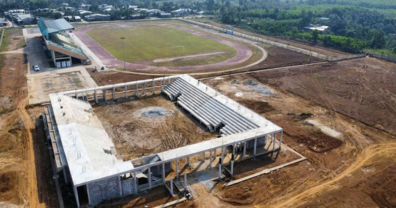
TIN MỚI Theo Trung tâm Cung ứng dịch vụ sự nghiệp công xã Khâm Đức (TP Đà Nẵng), đơn vị này vừa tiếp nhận 12 dự án từ Ban Quản lý dự án đầu tư xây dựng khu vực Phước Sơn (cũ). Trong đó, 6 công trình đ
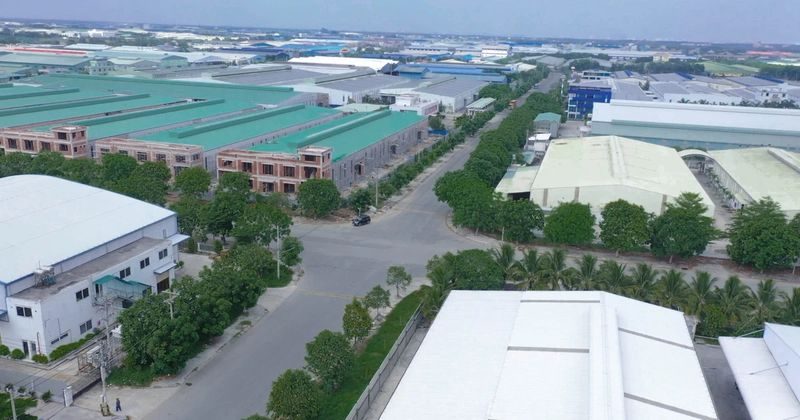
TIN MỚI Công ty CP Đại Lộc Long An vừa nộp đơn khởi kiện Tổng công ty Truyền tải điện Quốc gia và người có quyền lợi - nghĩa vụ liên quan là Chi nhánh Trung tâm Phát triển quỹ đất khu vực Đức Hoà, yêu
Cuối tháng 3, Hồ Ngọc Hà chia sẻ chuyến đi chơi California nhân dịp cô lưu diễn ở Mỹ. Bốn thành viên gia đình ca sĩ lưu lại kỷ niệm bên cầu Cổng Vàng. Hà Hồ cho biết thích cảm giác cả nhà quây quần nê
TIN MỚI Trong bối cảnh kinh tế toàn cầu tiếp tục đối mặt với nhiều bất ổn, từ áp lực lạm phát kéo dài, chi phí nguyên vật liệu biến động đến những căng thẳng địa chính trị tại một số khu vực, các doan
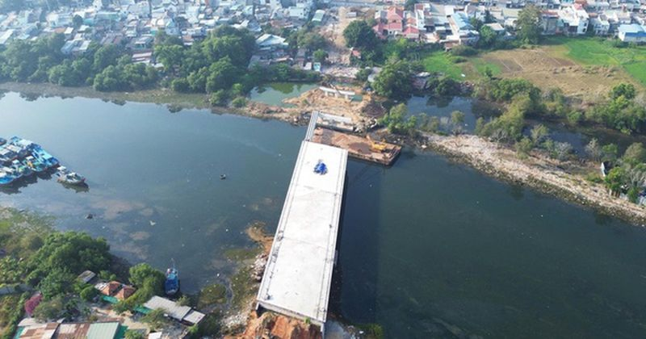
TIN MỚI Gỡ "nút thắt" mặt bằng Cầu Văn Thánh là cầu thứ 5 bắc qua sông Cà Ty, có vai trò kết nối hai bờ đô thị Phan Thiết, giảm tải giao thông cho các tuyến trục chính và hoàn thiện mạng lưới hạ tầng.
Tổng đạo diễn Cao Trung Hiếu cho biết việc mời các nghệ sĩ Gen Z trong đêm nhạc ngày 30/5, diễn ra tại quảng trường Bình Minh, Ninh Bình là thành công của lễ hội. Bởi họ là những gương mặt trẻ, sáng t
Khi phụ nữ bước sang tuổi 30, cơ thể trải qua những thay đổi tự nhiên, có thể ảnh hưởng đến quá trình trao đổi chất, mức năng lượng, sức khỏe tổng thể. Nhu cầu dinh dưỡng thường thay đổi do biến động
Theo quy định hiện hành, ôtô tham gia giao thông thì được cấp giấy chứng nhận kiểm định và dán tem kiểm định trên kính xe. Tuy nhiên, theo Nghị định 89/2026 về điều kiện kinh doanh dịch vụ kiểm định d
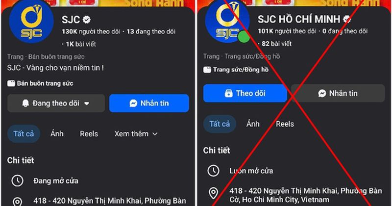
TIN MỚI Theo thông tin từ fanpage chính thức của Công ty TNHH MTV Vàng bạc Đá quý Sài Gòn (SJC), nhiều trang giả mạo hiện sử dụng đầy đủ logo, nội dung và thậm chí có cả dấu tích xanh để tạo lòng tin.
TIN MỚI Khi thời gian trở thành "đơn vị đo" giá trị Thực tế tại Hà Nội cho thấy một nghịch lý ngày càng rõ rệt. Những quãng đường chỉ 3 - 5 km trong khu vực nội đô có thể mất tới 30 - 50 phút di chuyể
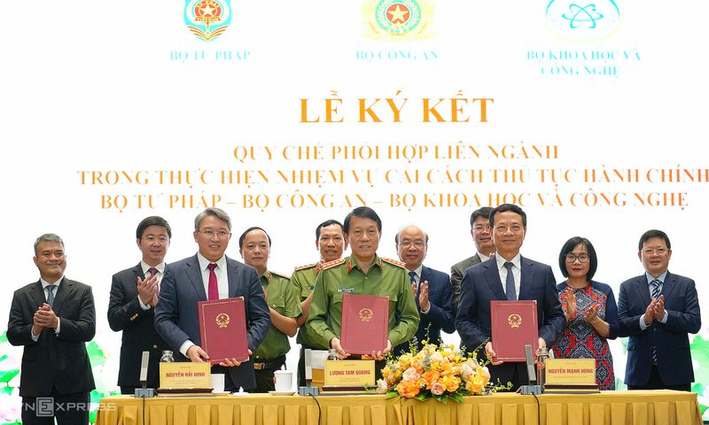
Sáng 4/4, tại trụ sở Bộ Tư pháp, Đại tướng Lương Tam Quang, Bộ trưởng Công an; Bộ trưởng Khoa học và Công nghệ Nguyễn Mạnh Hùng và Bộ trưởng Tư pháp Nguyễn Hải Ninh đồng chủ trì lễ ký kết "quy chế phố
TIN MỚI Mới đây, Sở Giao dịch Chứng khoán TP.HCM (HoSE) đã công bố danh sách chứng khoán không đủ điều kiện giao dịch ký quỹ (margin) trong quý II/2026. Danh sách này bao gồm tổng cộng 68 mã cổ phiếu
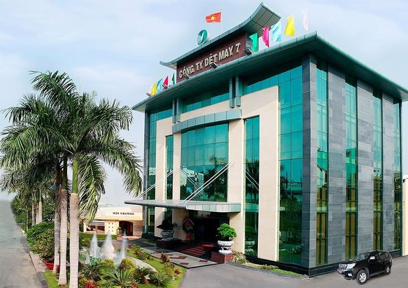
DM7: Giá hiện tại Thay đổi Xem hồ sơ doanh nghiệp TIN MỚI Theo báo cáo vừa được gửi lên Ủy ban Chứng khoán Nhà nước và Sở Giao dịch Chứng khoán, ông Đặng Văn Lâm đã thực hiện giao dịch làm thay đổi tỷ
TIN MỚI Ảnh minh họa Sở Giao dịch Chứng khoán TP.HCM (HoSE) đã có thông báo số 846/TB-SGDHCM về việc xử lý vi phạm đối với cổ phiếu. Theo đó, cổ phiếu CMX của Công ty Cổ phần Camimex Group bị giữ nguy
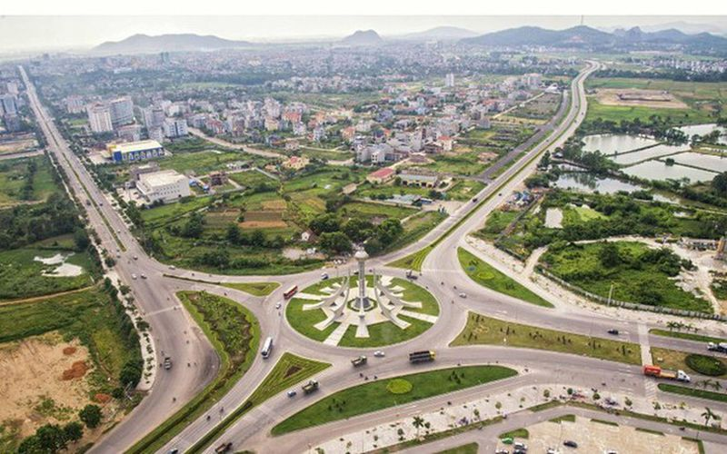
TIN MỚI Nằm tại giao điểm của nhiều trục động lực, Triệu Sơn đang dần trở thành điểm hội tụ mới của dòng dịch chuyển dân cư, kinh tế và đô thị hóa. Triệu Sơn đón sóng lan tỏa từ các cực tăng trưởng Th
TIN MỚI Khi đô thị Bình Dương (cũ) bước sang giai đoạn phát triển cao hơn Không còn tăng trưởng chủ yếu bằng mô hình công nghiệp truyền thống, Bình Dương (cũ) sau sáp nhập được định hướng phát triển l
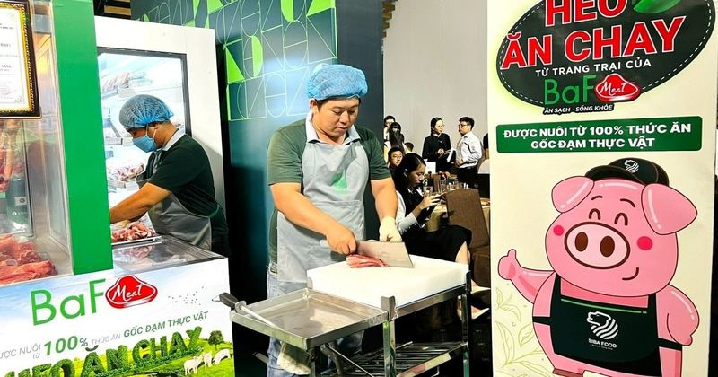
BAF: Giá hiện tại Thay đổi Xem hồ sơ doanh nghiệp TIN MỚI Theo tài liệu họp Đại hội đồng cổ đông thường niên dự kiến tổ chức ngày 23/4 tại TP.HCM, BAF đặt mục tiêu doanh thu 8.431 tỷ đồng, tăng 67% và
TIN MỚI Đoạn video gây sốc cho thấy chiếc máy bay lao thẳng vào tòa nhà trước khi bốc cháy dữ dội. Vụ tai nạn nghiêm trọng xảy ra ngay sau 10 giờ 30 phút sáng giờ địa phương ngày thứ Sáu (3 tháng 4) k
Không chỉ phá kỷ lục 18 trận thắng liên tiếp trên sân nhà ở Cup FA sau 145 năm, Man City còn chơi áp đảo trước kỳ phùng địch thủ như Liverpool. Trọng tài Michael Oliver chỉ cho hiệp hai bù ba giây, tr
TIN MỚI Cục Thống kê vừa công bố báo cáo chỉ số giá sinh hoạt theo không gian năm 2025. Chỉ số giá sinh hoạt theo không gian (viết tắt theo tiếng Anh là SCOLI) là chỉ tiêu tương đối (tính bằng %) phản
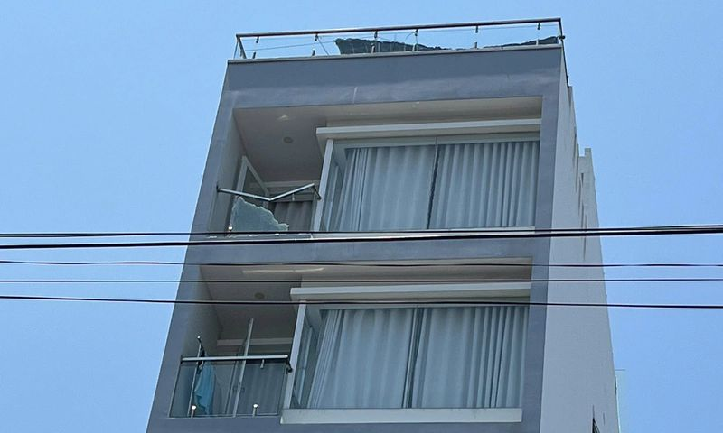
Theo thông tin ban đầu, nạn nhân quê ở TP Đà Nẵng đến thuê phòng tại căn hộ từ hôm trước. Khoảng 10h, người này đứng ở ban công tầng 7 rồi rơi xuống đất. Nhân chứng cho biết, trong lúc rơi, nạn nhân v
Theo ArtNews hôm 3/4, trong phiên của nhà đấu giá Saffronart ở Delhi, tỷ phú Cyrus Poonawall - người sáng lập Viện Huyết thanh Ấn Độ - đã mua bức họa. Mức giá này vượt qua kỷ lục trước đó của tranh Ấn
Bức ảnh đầu tiên được chỉ huy Reid Wiseman chụp ngày 3/4, cho thấy một phần Trái Đất nhìn qua cửa sổ khoang tàu vũ trụ Orion. Bức thứ hai thể hiện toàn cảnh Trái Đất, với đại dương xanh, đất liền màu
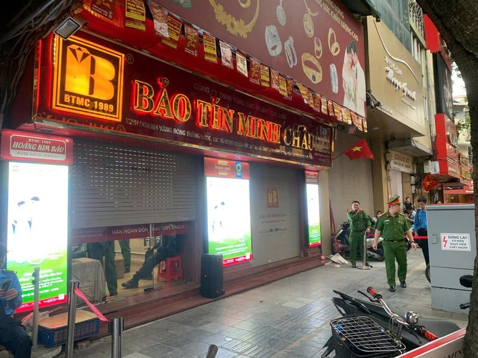
TIN MỚI Cụ thể, Công an TP Hà Nội sẽ thông tin liên quan về vi phạm quy định về kế toán, xảy ra tại Công ty TNHH Bảo Tín Minh Châu (phường Hai Bà Trưng, Hà Nội). Trước đó, ngày 25/3, Công an TP Hà Nội
Bệnh lao do gene Lao không phải là bệnh di truyền hay bệnh do gene. Bệnh do vi khuẩn Mycobacterium tuberculosis gây ra và lây truyền từ người sang người qua đường không khí. Triệu chứng đặc trưng gồm
Theo Đội CSGT đường bộ cao tốc số 6 (Cục CSGT, Bộ Công an), các trường hợp vi phạm được ghi nhận từ ngày 3 đến 4/4. Lực lượng tuần tra dùng xe hóa trang, gắn thiết bị ghi hình chuyên dụng để phát hiện
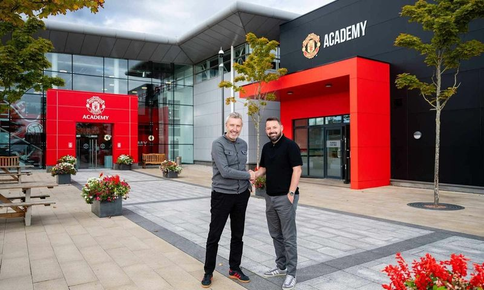
Giám đốc học viện Stephen Torpey ngồi trong một phòng họp hiện đại tại tòa nhà chính vừa được cải tạo ở Carrington, trước mặt là hàng loạt vấn đề cần giải quyết. Đó là cơn sốt ngày càng lớn quanh tài
TIN MỚI Một vụ tai nạn hàng không nghiêm trọng vừa xảy ra tại bang Puebla, Mexico khiến 4 người thiệt mạng. Theo thông tin từ lực lượng chức năng địa phương, chiếc máy bay một động cơ khởi hành từ sân
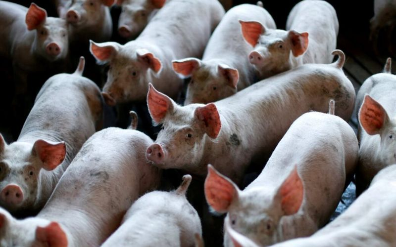
TIN MỚI Thịt lợn giữ một vị trí đặc biệt trong khẩu phần ăn của người Trung Quốc. Từng có thời, đây là biểu tượng của cuộc sống đủ đầy; chữ “gia” (家) trong tiếng Trung vốn được cấu thành từ hình ảnh m
Ngân hàng Tiên Phong (TPBank) mới công bố danh sách 2 ứng viên để bầu bổ sung thành viên Hội đồng quản trị tại phiên họp cổ đông thường niên cuối tháng 4. Bà Đỗ Quỳnh Anh, người đang nắm hơn 85 triệu
Ngày 1/4, trên trang cá nhân, Đoan Trang đăng bộ ảnh kỷ niệm con gái tròn 12 tuổi do em trai cô - đạo diễn Cao Trung Hiếu - thực hiện. Ngày 1/4, trên trang cá nhân, Đoan Trang đăng bộ ảnh kỷ niệm con
"Việt Nam có đội hình tốt hơn Malaysia, với hai cầu thủ nhập tịch Nguyễn Xuân Son và Đỗ Hoàng Hên", Zulhelmi nói trên chương trình Nadi Arena ngày 3/4, khi phân tích thất bại 1-3 của Malaysia trước Vi
Ngày 2/4, Công an tỉnh Cao Bằng cho biết Cơ quan Cảnh sát điều tra đã khởi tố, tạm giam Triệu Thị Dung, 32 tuổi, trú xã Phủ Thông, tỉnh Thái Nguyên, để điều tra tội Truyền bá văn hóa phẩm đồi trụy. Cù
Dịp ca sĩ Phương Thảo đón tuổi 56 hôm 13/3, nhạc sĩ Ngọc Lễ, 57 tuổi, đăng ảnh bên vợ và viết: "Chúc mừng sinh nhật người tình trăm năm của anh. Lúc chúng ta mới gặp cứ mong được cùng già bên nhau. Th
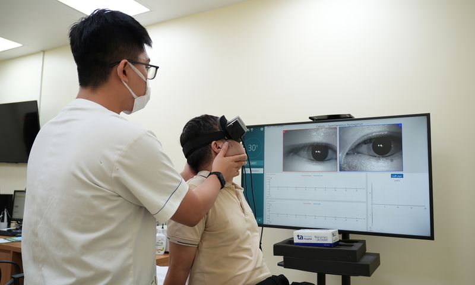
Trả lời: Bệnh Ménière là bệnh lý rối loạn thính lực và tiền đình ngoại biên, xảy ra ở tai trong do tăng bất thường dịch và ion nội mô. Bệnh thường gặp hơn ở người lớn khoảng 40-60 tuổi, có xu hướng tr
* Bài viết tiết lộ nội dung phim Tác phẩm do Josh Safdie đạo diễn, lấy bối cảnh New York thập niên 1950. Nội dung xoay quanh Marty Mauser (Timothée Chalamet) - lấy cảm hứng từ vận động viên bóng bàn c
Hương Lan, học sinh lớp 9A1, trường THCS Ngọc Thanh, là một trong hai thủ khoa môn Ngữ văn tại kỳ thi học sinh giỏi tỉnh Phú Thọ với 16,5/20 điểm. Nhà trường cho biết thành tích này đặc biệt ý nghĩa k
TIN MỚI Thủ tướng chủ trì phiên họp thường kỳ và Hội nghị trực tuyến Chính phủ với địa phương - Ảnh: VGP/Nhật Bắc Tham dự phiên họp có các đồng chí Ủy viên Bộ Chính trị, Uỷ viên Ban Bí thư, Ủy viên Tr
Hơn 10 năm vắng bóng màn ảnh, hôm 3/4, Ỷ Hồng gây chú ý khi xuất hiện trong talkshow do đồng nghiệp cũ của cô - Đỗ Đình Hào - dẫn dắt. Lý Ỷ Hồng nói về cuộc sống ở Canada, quá trình chữa bệnh trầm cảm
Công ty Precious Shipping sở hữu tàu hàng Mayuree Naree ngày 3/4 thông báo tới Bộ Ngoại giao Thái Lan kết quả nhiệm vụ tìm kiếm cứu nạn lần hai trên tàu. Đây là con tàu hàng bị Iran tập kích trên eo b
Gần đây, có những tuần anh ấy gần như không về nhà. Tôi tìm hiểu mới biết anh ấy thực chất đang sống chung với một phụ nữ khác. Không chỉ vậy, người đó còn đang mang thai.
Ngày 3/4, TS.BS Nguyễn Đình Minh, Trưởng khoa Phẫu thuật tạo hình, thẩm mỹ và tái tạo, Bệnh viện Đại học Y Dược - cơ sở Linh Đàm, tiếp nhận trường hợp đặc biệt này. Sau thăm khám, bác sĩ nhận thấy khu
Kết quả chụp MRI cho thấy khối u gan của bà Hương lớn 56x63x51 mm, xâm lấn tĩnh mạch cửa. Nhiều vật liệu nút mạch sót lại, nhưng mạch máu nuôi khối u vẫn tăng sinh. Xét nghiệm chỉ dấu ung thư gan (AFP
Giải chạy mang tên "Embracing Our Future" (Nắm giữ tương lai), nằm trong chuỗi 22 hoạt động "đồng kiến tạo vì tương lai bền vững", hướng đến kỷ niệm 50 năm thành lập của UEH. Nhà trường kỳ vọng giải c
TIN MỚI Sunshine Bay Retreat được định vị là Tổ hợp Integrated Resort tiêu chuẩn 5 sao thế hệ mới tại Vũng Tàu (cũ), nay thuộc TP.HCM. Dự án tọa lạc trên trục đường Ba Tháng Hai (phường Phước Thắng),
Hôm nay, Man City lần đối đầu Liverpool thứ 27 dưới thời Guardiola, khi đại chiến ở tứ kết Cup FA trên sân Etihad. Theo truyền thông Anh, đây có thể là "vũ điệu cuối" của Guardiola với Man City trước
Ronaldo dính chấn thương gân kheo ở trận thắng Al Fayha 3-1 hôm 28/2. Anh về Bồ Đào Nha tĩnh dưỡng hơn một tháng, nên vắng mặt hai trận của Al Nassr và hai trận của đội tuyển. Khi trở lại, tiền đạo 41
Phút 23, hậu vệ Toulouse phá bóng đến đúng vị trí Dembele đang đợi sẵn ngoài vòng cấm. Không một nhịp khống chế, tiền đạo người Pháp tung cú vô-lê chân trái đầy cảm giác, đưa bóng găm thẳng vào góc ca
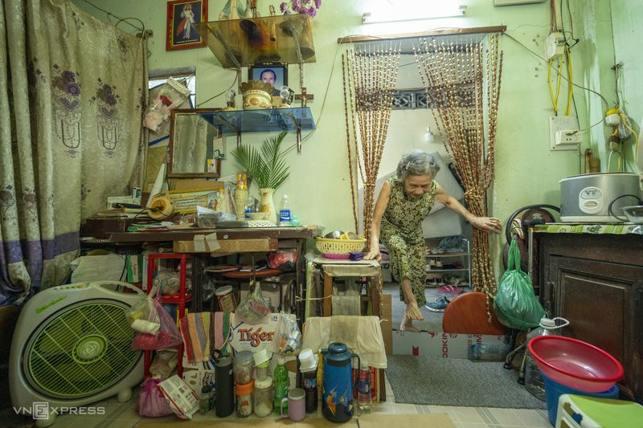
29 hộ dân trong kiệt 15 Phạm Hồng Thái, phường Hải Châu, đang sống trong khu nhà tạm xuống cấp, tiềm ẩn nhiều nguy cơ mất an toàn. Lối vào khu nhà rộng chưa đầy 2 m, phía trên chằng chịt dây điện, cáp
Tối thiểu vào đến tứ kết, còn vô địch là tham vọng cao nhất mà thầy trò Hajime Moriyasu đặt ra cho kỳ World Cup hè này. Nếu hiện thực hóa được mục tiêu tối thượng, Nhật Bản sẽ tạo nên cột mốc lịch sử
Trận đấu diễn ra tại Trung tâm Văn hóa Mumias, vùng Kakamega, giữa Oyoko và đối thủ Julius Okuruchi, thuộc hạng siêu nhẹ, dự kiến kéo dài bốn hiệp. Đây là một trong bốn trận đấu phụ trước màn so găng
Nhật Bản không chỉ nổi tiếng với chế độ ăn uống khoa học mà còn được thế giới biết đến như một quốc gia giữ kỷ lục về tuổi thọ trung bình. Theo dữ liệu từ Tổ chức Y tế Thế giới (WHO), tuổi thọ của ngư
TIN MỚI Báo cáo tài chính năm 2025 ghi nhận kết quả kinh doanh của Vipico đã có lãi. Dù quy mô lợi nhuận chưa lớn, việc duy trì trạng thái có lãi trong bối cảnh thị trường còn nhiều khó khăn được xem
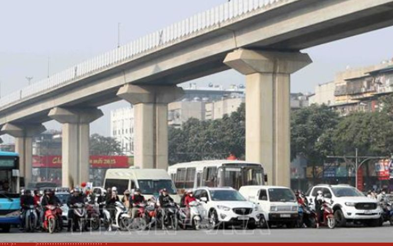
TIN MỚI Sở Xây dựng Hà Nội vừa báo cáo UBND TP Hà Nội về tình hình thực hiện Quyết định số 01/2026/QĐ-UBND quy định hoạt động của phương tiện giao thông đường bộ trên địa bàn. Theo quy định hiện hành,
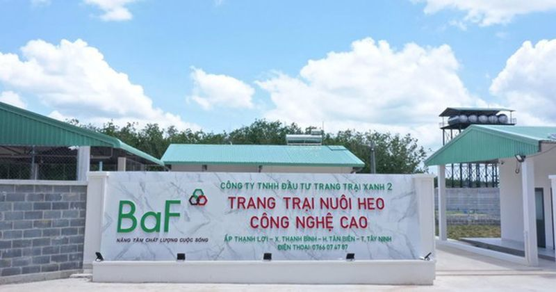
TIN MỚI Công ty CP Nông nghiệp BaF Việt Nam (MCK: BAF, sàn HoSE) vừa đăng tải giấy mời cổ đông tới dự kỳ họp ĐHĐCĐ thường niên năm 2026. Theo đó, thời gian họp dự kiến vào 13h30 ngày 23/4/2026 tại Sản
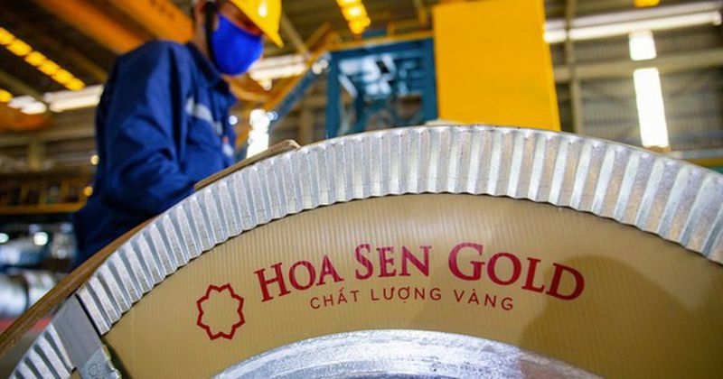
HSG: Giá hiện tại Thay đổi Xem hồ sơ doanh nghiệp TIN MỚI CTCP Tập đoàn Hoa Sen (Hoa Sen Group, MCK: HSG, sàn HoSE) vừa có văn bản thông báo về việc phát hành cổ phiếu để trả cổ tức niên độ tài chính
BS.CKI Bạch Thị Chính, Giám đốc Y khoa, Hệ thống Tiêm chủng VNVC, cho biết tay chân miệng do nhiều chủng virus đường ruột gây ra, thường gặp như Coxsackie A16, A6, A10 và Enterovirus 71 (EV71). Riêng
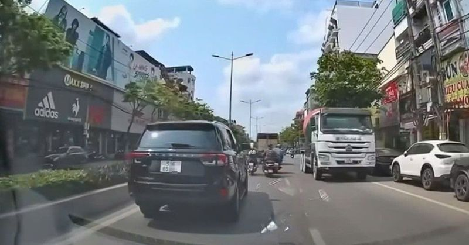
TIN MỚI Một tài xế có thể bị phạt tới 20 triệu đồng sau khi bị phản ánh vi phạm trên VNeTraffic Ngày 2/4, Cục CSGT cho biết, nhờ sự hỗ trợ đắc lực của hệ thống VNeTraffic và sự vào cuộc quyết liệt của
TIN MỚI Trước thềm sự kiện kick-off vào ngày 7/4, dự án càng khiến thị trường sôi sục khi hé lộ diện mạo của một "kinh đô wellness" giữa lòng đô thị vịnh biển. Thanh lọc thân - tâm mỗi ngày tại "vườn
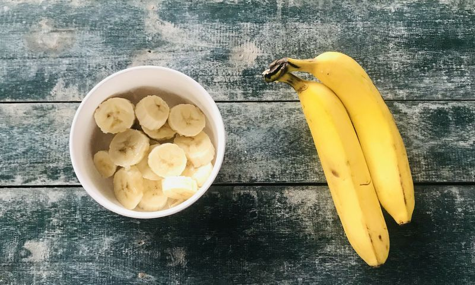
Chuối là một trong những loại trái cây quen thuộc, được ưa chuộng nhờ tính tiện lợi, dễ ăn và giàu dinh dưỡng. Chuối cung cấp nguồn năng lượng nhanh nhờ hàm lượng carbohydrate cao, phù hợp cho bữa phụ
Người đẹp nhận sự quan tâm của công chúng khi dự nhiều sự kiện đầu năm. Hôm 27/3, hàng trăm người hò reo, đợi LyLy hàng giờ tại một trung tâm thương mại để chụp ảnh cùng. Cô nói: "Nhiều năm vào showbi
Phút 30, Công an Hà Nội (CAHN) thu hồi bóng ở sân nhà để Nguyễn Quang Hải chuyền bổng ra sau lưng hàng thủ đã dâng cao của Đà Nẵng. Đình Bắc bứt tốc, rồi đẩy bóng vượt qua Nguyễn Văn Toản khi thủ môn
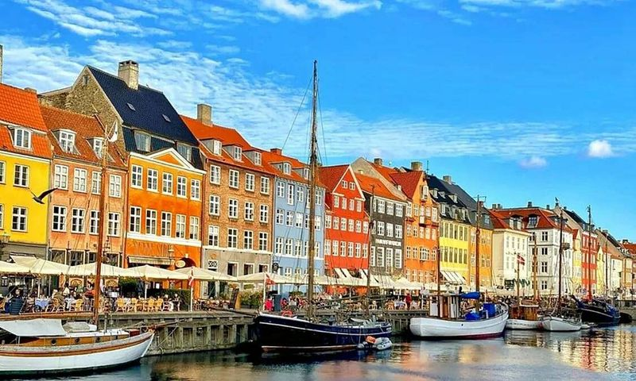
Khánh Linh
TIN MỚI NASA vừa chia sẻ những hình ảnh ngoạn mục đầu tiên về Trái Đất được chụp từ sứ mệnh Artemis II khi phi hành đoàn tiếp tục hành trình hướng tới Mặt Trăng. Trong những bức ảnh cho thấy Trái Đất
Trả lời Bệnh thủy đậu, dân gian còn gọi là trái phỏng hoặc trái rạ, do virus Varicella zoster gây ra. Biểu hiện đặc trưng là những nốt mụn nước nổi trên da, chủ yếu trên thân người và mặt, đôi khi ở d
TIN MỚI Hãng thông tấn TASS ngày 4-4 dẫn thông tin từ kênh Al Jazeera cho biết Iran đã chia các quốc gia thành ba nhóm: "thù địch", "trung lập" và "thân thiện". Theo cơ chế này, các tàu thuộc nhóm "th
"Ví khỏe nhà ta" được thiết kế với cách sử dụng đơn giản, tích hợp trên ứng dụng Long Châu với giao diện thân thiện. Người dùng chỉ cần xác thực thông tin gia đình (tối thiểu 3 thành viên), kích hoạt
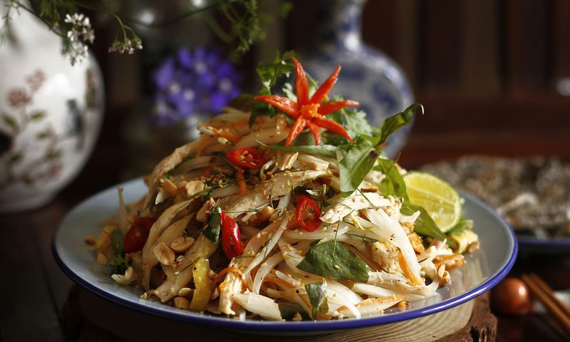
Ngủ không đủ giấc gây mệt mỏi, ảnh hưởng đến sức khỏe làn da, tim mạch, giảm khả năng tập trung cũng như trí nhớ. Để có giấc ngủ ngon, bạn nên xây dựng những thói quen lành mạnh vào buổi tối. Thư giãn
TIN MỚI Liên quan đến dịp nghỉ Lễ Giỗ tổ Hùng Vương và 30/4, 1/5 tới đây, vào ngày 3/4, Cục Việc làm (Bộ Nội vụ) cho biết, không có chủ trương hoán đổi để nghỉ 9 ngày liên tiếp. Lãnh đạo Cục Việc làm
TIN MỚI Ngày 4/4, UBND TP.HCM và Đại học Quốc gia TP.HCM tổ chức Hội thảo tham vấn chuyên gia về dự thảo Luật Đô thị đặc biệt - Chính sách đột phá và không gian phát triển cho TP.HCM. TP.HCM cần một t
Tập đoàn vận tải biển Mitsui O.S.K. Lines có trụ sở tại Tokyo ngày 3/4 cho biết tàu chở khí tự nhiên hóa lỏng (LNG) mang tên Sohar LNG đã vượt qua eo biển Hormuz, toàn bộ thủy thủ đoàn đều an toàn. Ph
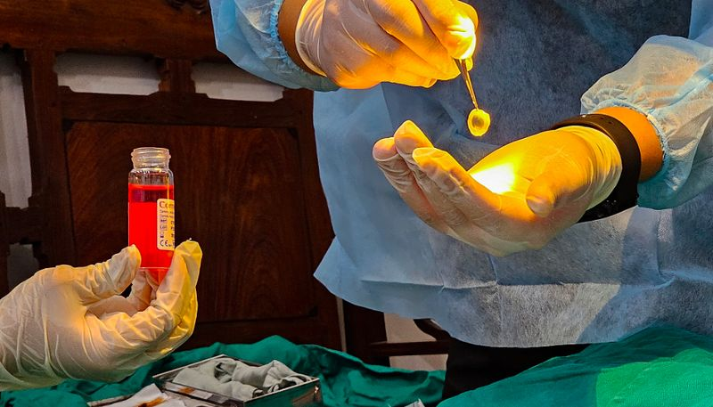
Thông tin được TS Vương Ánh Dương, Phó Cục trưởng Cục Quản lý Khám, chữa bệnh (Bộ Y tế), cho biết tại Hội thảo khoa học quốc tế về giác mạc sinh học, do Hội Nhãn khoa Việt Nam phối hợp với Công ty VGC
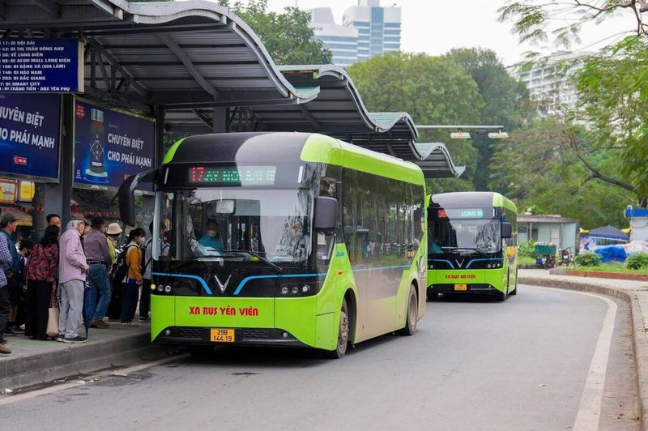
TIN MỚI Trong văn bản mới ban hành để thông tin về chính sách vé vận tải hành khách công cộng trên địa bàn thành phố, Sở Xây dựng Hà Nội cho biết, gần đây trên một số phương tiện th
Chỉ chưa đầy một năm sau khi nhận nhiệm vụ, HLV người Lithuania Kotryna Kulbyte đã tạo dấu ấn đậm nét khi giúp Uzbekistan vượt qua Nepal hồi tháng 7/2025 để giành quyền tham dự Asian Cup nữ 2026. Chỉ
ThS.BS Phạm Đức Tuấn, Khoa Nhi, Bệnh viện Đa khoa Tâm Anh Hà Nội, cho biết trẻ mắc bệnh tay chân miệng có thể phục hồi sau 5-7 ngày nếu hệ miễn dịch đáp ứng tốt và được chăm sóc đúng cách. Tuy nhiên,
Nhìn chóp mũi Bài tập này còn gọi là Nasikagra Drishti trong yoga, trong đó người tập cố định ánh mắt vào chóp mũi để rèn khả năng tập trung và thư giãn mắt. Ngồi ở tư thế thoải mái, nhìn vào chóp mũi
Ở set 3, khi tỷ số đang là 10-6, Vinh Hiển dường như dao động, bỏ lỡ đến 8 match-point. Anh quyết định dùng quyền "medical time out" để có ba phút nghỉ ngơi, và được các bác sĩ vào sân chăm sóc. Staks
TIN MỚI Đại tá Nguyễn Đức Long- Phó Giám đốc Công an TP.Hà Nội tại buổi họp báo. Ảnh: Bộ Công an Thông tin từ Bộ Công an, ngày 3/4/2026, tại Họp báo thông báo tình hình, kết quả các mặt công tác công
TIN MỚI Theo BHXH Việt Nam, hiện nay chính sách bảo hiểm thất nghiệp được thực hiện theo Luật Việc làm 2025 với nhiều điểm điều chỉnh đáng chú ý, trong đó có việc thống nhất mức trần tiền lương làm că
Klarity Skin Clinic, một phòng khám tại New Delhi, đang quảng bá gói dịch vụ "Cô dâu Mounjaro". Các phòng khám khác đưa mũi tiêm giảm cân vào "gói thay đổi diện mạo trước đám cưới", vốn thường tập tru
TIN MỚI Theo báo cáo của Cục Thống kê (Bộ Tài chính), trong tháng 3, Việt Nam tiếp tục đón gần 2,1 triệu lượt khách quốc tế, tăng 1,3% so với cùng kỳ năm trước. Tính chung trong cả quý I, tổng lượng k
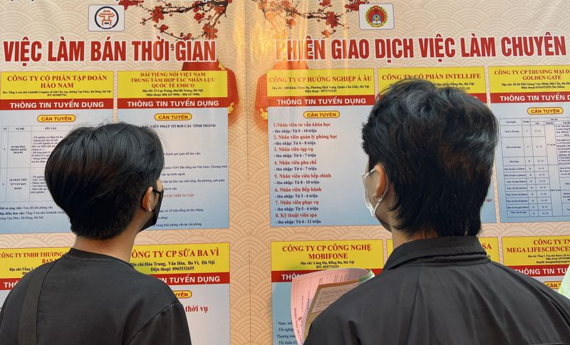
Trong ba tháng đầu năm, số thanh niên thuộc nhóm này tăng gần 173.000 người so với quý 4/2025 và tăng 212.500 người so với cùng kỳ năm trước, chiếm 11,4% tổng số thanh niên, theo công bố sáng 4/4 của
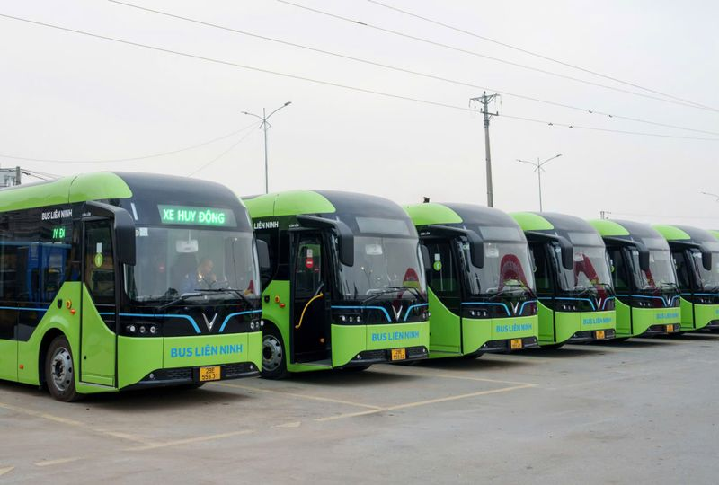
Ngày 3/4, Sở Xây dựng TP Hà Nội cho biết thông tin thành phố miễn phí xe buýt toàn dân là chưa đúng, gây hiểu nhầm trong dư luận. Thành phố chưa có chủ trương này mà đã và đang thực hiện chính sách mi
Trả lời Viêm gan virus D (HDV) không thể tồn tại và nhân lên độc lập mà phải sử dụng lớp vỏ của virus viêm gan B (HBV) để xâm nhập và nhân lên trong tế bào gan. Tức, HDV chỉ xuất hiện ở những người đã
TIN MỚI Ảnh minh họa Công ty CP Thành Thành Công - Biên Hòa (AgriS, MCK: SBT, sàn HoSE) vừa công bố Nghị quyết HĐQT về việc phê duyệt phương án mua lại trước hạn trái phiếu riêng lẻ. Theo đó, AgriS th
Khi lên đường sang Australia dự giải hồi đầu tháng 3, tiền vệ Mona Hamoudi chỉ có một mục tiêu: thi đấu tốt. Nhưng giải đấu nhanh chóng biến thành "phép thử toàn diện về kỹ năng, sự kiên nhẫn và khả n
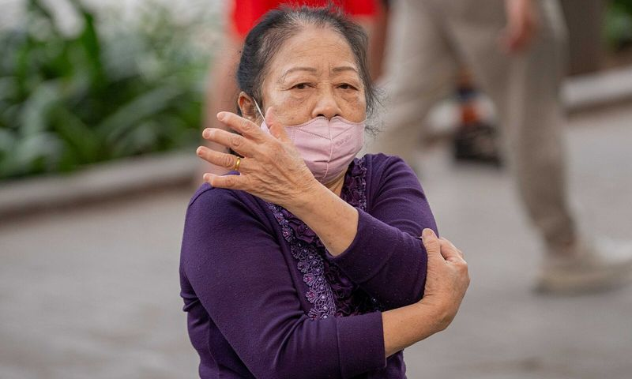
Thoái hóa khớp là tình trạng tổn thương sụn khớp và xương dưới sụn, thường kèm phản ứng viêm và giảm lượng dịch khớp. Bác sĩ Hoàng Quyết Tiến, Trung tâm Thông tin Y khoa, Bệnh viện Đa khoa Tâm Anh TP
Kỷ niệm ba năm vào showbiz, Minh Kiên lần đầu thực hiện bộ ảnh với mẹ. Á hậu nói: "Cảm ơn mẹ vì trở thành ngọn hải đăng soi rọi, là điểm tựa giúp tôi mạnh mẽ trên đường đời". Cô sinh ra trong gia đình
Trên sân Bilino Polje tối 31/3, Italy và Bosnia & Herzegovina phải giải quyết thắng thua bằng loạt luân lưu, sau khi hòa 1-1 qua 120 phút. Tại đây, thủ thành Gianluigi Donnarumma không cản phá được cú
Theo bác sĩ Nguyễn Thị Kiều Linh, Khoa Nội Thận - Lọc Máu, Phòng khám Đa khoa Tâm Anh Cầu Giấy, thời tiết nắng nóng dễ làm cơ thể mất nước và rối loạn cân bằng dịch, ảnh hưởng đến chức năng lọc của th
Thực phẩm được chia thành ba nhóm gồm thực phẩm thô, chế biến tối thiểu và thực phẩm siêu chế biến. Thực phẩm tiện lợi là những thực phẩm đã được chế biến sẵn, người sử dụng không cần phải mất thời gi
Mới đây, Tập đoàn Vingroup đề xuất mở rộng đường Rừng Sác từ 6 lên 10 làn kết hợp xây đoạn nối 2 km với tuyến 15B, tổng vốn 19.000 tỷ đồng. Đường dài khoảng 35 km, hình thành cách đây 40 năm, là một t
Cô gái 20 tuổi mỉm cười đón nhận sự nhiệt tình này và gọi đây là "đặc quyền công chúa", một khái niệm hoàn toàn xa lạ trong quá khứ. Cách đây chưa lâu, khi mức cân nặng xấp xỉ 70 kg, Hiền gần như vô h
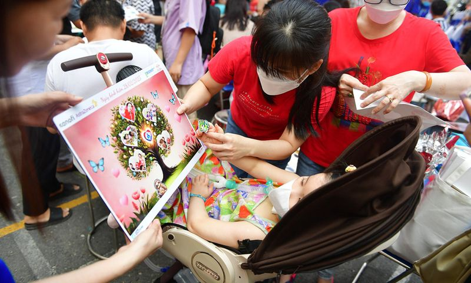
Theo ông Nguyễn Trọng Khoa, Phó Cục trưởng Cục khám chữa bệnh (Bộ Y tế), hiện nay thế giới chưa có một định nghĩa thống nhất về bệnh hiếm. Cách tiếp cận phổ biến là dựa trên tỷ lệ mắc trong cộng đồng.
Các bệnh nhân được đưa tới Trung tâm Y tế Kỳ Sơn (trước đây thuộc huyện Kỳ Sơn) cấp cứu trưa 3/4 trong tình trạng nôn nhiều, mê man, rối loạn hành vi, khó thở, tức ngực. Bác sĩ xác định họ có dấu hiệu